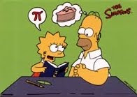
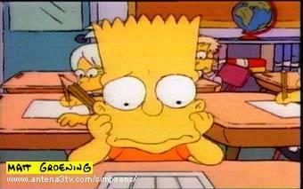

CAPITULO 1
BART, EL GENIO

Queria vender la tira comica de bynky a fox pero pensaba que traicionaria los dibujos de el conejo,los simpson se invento en segundos para haci no vender a binky.
y haci crearon muchos cortos animados de la familia de los simpson, los cortos duravan muy poco tiempo.
El primer episodio de los simpson fue el de bart, el genio. Ese capito tiene muchos aspectos de matematicas.
bart hace trampa en el examen y todos piensan que es un niño superdotado y lo transladan a otra escuela donde hay puros niños superdotados.
Hizieron la comedia con muchas matematicas, ya que dos de los guionistas eran amantes de las matematicas.
Cuando mas gionistas se unieron a los simpson querian expresar lo mucho que les gustaba las matematicas.
Trataron de hacer la comedia para todo tipo de publico.
